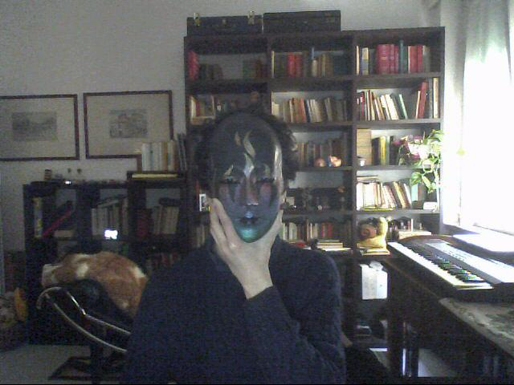

Welcome to my own little road on the information super-highway!


ABOUT ME, YUP
Haaaaaiiiiiii everyone :3 !!!!!!!!!!!!!
How are you cuties? i hope all is well! just like the french song! this page is all about me... who am I? what's my favourite shade of beige? and so on!
I re-built this website from scratch to include all the information that i didnt put in the last one, and to give it that gorgeous kitsch only 90s websites had
Ok so... to start from the basics... I'm Portob3ll0(AKA UmbiOnline/Robotron The Protogen/Fox Dante/Tungsten Dioxide) and i'm a Femboy Furry! i'm also a closeted gay person as i came out only to 2 friends of mine irl rn.

PHOTO OF MYSELF WITH A MASK
then, i'm a minor, but as i am smart enough to follow internet safety and avoid scams(my fursona's a fox protogen, and i chose that because not only do i like its looks, but it reflects myself almost perfectly!) so i will never reveal my age unless i feel really comfortable in a group, also, if i say that i'm of a certain age (ex. i've said many times that i'm 13 or 16, but that are all lies)
Next thing, my favourite Music Artists are ABBA, Lemon Demon, The Beatles, Street-catz, David Bowie and Queen. My favourite films are Goodbye Lenin, Mamma Mia and the Pink Panther films(the ones with inspector cluseaux) and my favourite TV shows are Beastars, The Pink Panther Show and Street-catz.
Ok, now that i've said the basics, lets lean into more precise aspects of me... My favourite shade of beige is Putty, but my favourite colours are aqua green and magenta(or whatever is it called in english), my favourite national anthem is "auferstanden aus ruinen" and my favourite non-pop song is my version of "The Internationale"(if you dont find it, it is because i still have to publish it... it will be available on my soundcloud soon or on this website through Macromedia Flash or something)
next thing... Well, i'm really interested in the history of the German Democratic Republic(Deutsche Demokratichen Republik, AKA East Germany) but i'm not a communist, but rather, a Progressive Socialist

FLAG OF EAST GERMANY
then, this is a thing i wanted to keep as far as i could from the reader's eyes, but i'm italian, and i dont like it. but not "italian" like the ones in new jersey or the ones that are like "OMG I DID AN ANCESTRY TEST I'M 1% ITALIAN!!!!" but i was born and raised in Italy, that is still (unfortunately) where i live.
But why do i say "unfortunately"? it is because, in Italy, i'm sure that AT LEAST 45% of the population is still fascist, and i'm not exagerating, i didnt come out yet because that would destroy my life and reputation here, as i live in one of the most conservative cities(Verona) in one of the most conservative countries(Italy)
i probably got too much political, but i want you to understand that these are the conditions i live in. thanks for reading this much.